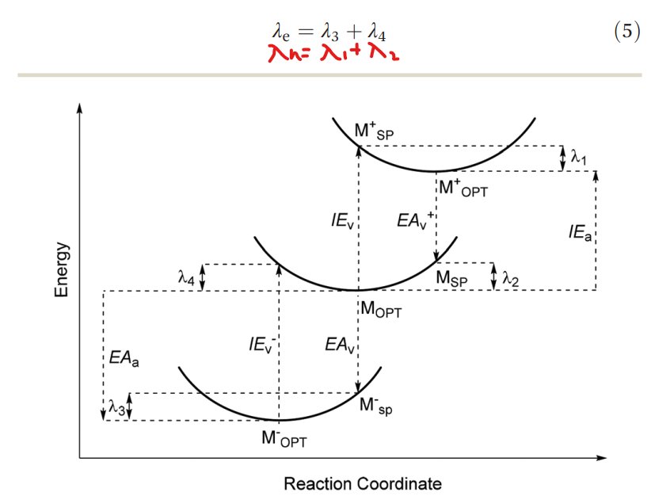

| CO | Ico | BCC | SC | |
|---|---|---|---|---|
| N | 10\nu^3/3+5\nu^2+11\nu/3+1 | 10\nu^3/3+5\nu^2+11\nu/3+1 | (2\nu+1)(\nu^2+\nu+1) | (2\nu+1)^3 |
| N_{\sigma} | 10\nu^2+2 | 10\nu^2+2 | 6\nu^2+2 | 24\nu^2+2 |
| D | N_{\sigma}/N | N_{\sigma}/N | N_{\sigma}/N | N_{\sigma}/N |
| N_S | 6(\nu-1)^2 | —- | 6(\nu-1)^2 | 6(2\nu-1)^2 |
| R_S^p | \nu(\nu+2)/8 | —- | \nu(\nu+2)/8 | \nu(\nu+1)/2 |
| R_S^i | (\nu^2-1)/8 | —- | (\nu^2-1)/8 | \nu(\nu+1)/2 |
| N_T | 4(\nu-1)(\nu-2) | 10(\nu-1)(\nu-2) | —- | —- |
| R_T^p | \sum\limits_{\alpha=1}^{m/2}(3\alpha+a)+\sum\limits_{\alpha=1}^{m/2-1}(3\alpha);\nu=3m+a;\alpha=-1,0,1 | \sum\limits_{\alpha=1}^{m/2}(3\alpha+a)+\sum\limits_{\alpha=1}^{m/2-1}(3\alpha);\nu=3m+a;\alpha=-1,0,1 | —- | —- |
| R_T^i | \frac{1+a}{1+|a|}+\sum\limits_{\alpha=1}^{(m-1)/2}(6\alpha+a);\nu=3m+a;\alpha=-1,0,1 | \frac{1+a}{1+|a|}+\sum\limits_{\alpha=1}^{(m-1)/2}(6\alpha+a);\nu=3m+a;\alpha=-1,0,1 | —- | —- |
| N_E | 24(\nu-1) | 30(\nu-1) | 12(\nu-1) | 12(2\nu-1) |
| R_E^p | \nu/2 | \nu/2 | \nu/2 | \nu |
| R_E^i | (\nu-1)/2 | (\nu-1)/2 | (\nu-1)/2 | \nu |
P.S.
 Fig. 1: The ionization energy (IE) and electron affnity (EA) pathways between the anion, neutral and cation potential energy surfaces for the calculation of the hole (electron) reorganization energy \lambda_h (\lambda_e).